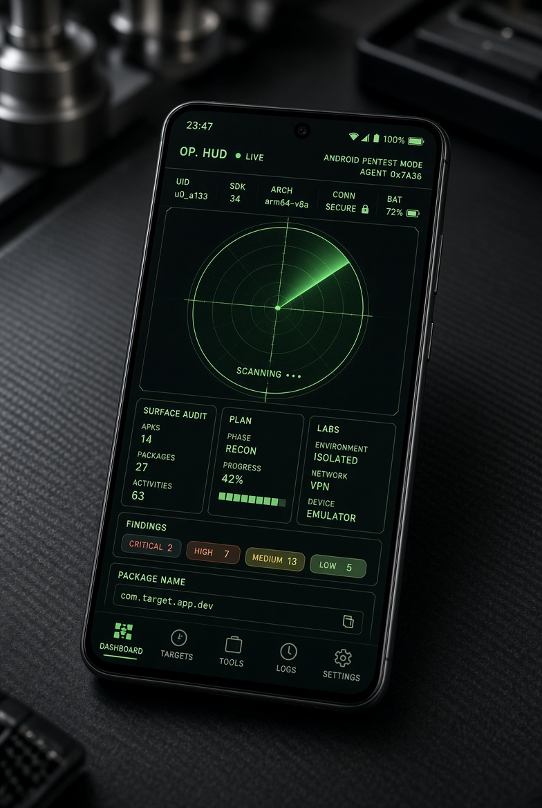
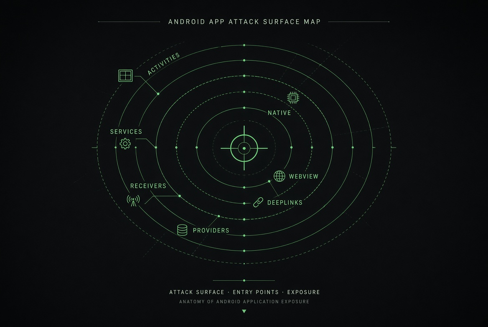
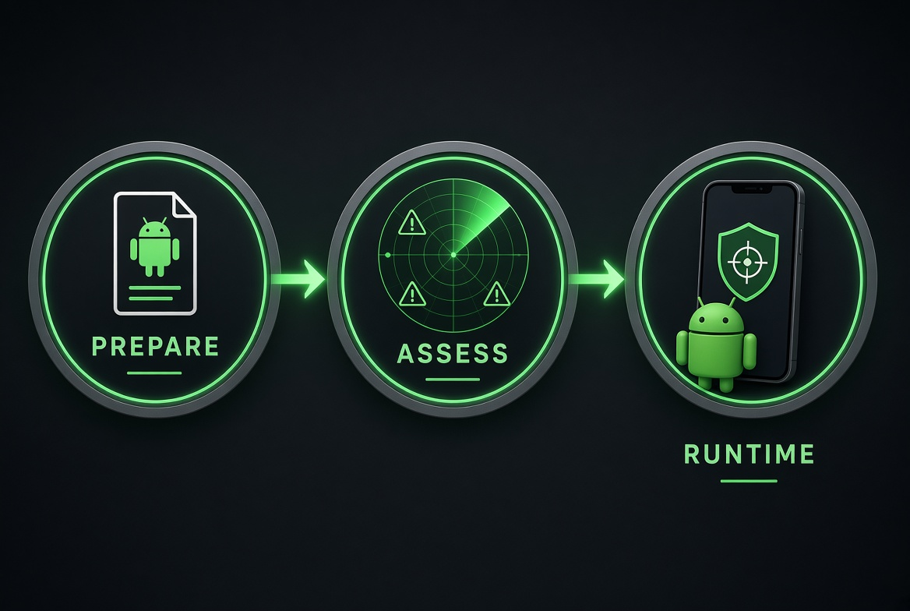

The model
AndroScope is an operator console plus a runtime that lives inside an authorized lab build. You do not install a second Play app and watch another process. Patch a lab variant once. PREPARE → ASSESS → RUNTIME on an unrooted phone.

What this sample exposes
Demo package is fictional lab.sample.app. Typical native surface, not a live customer.


Why gadget, not a rooted farm
Public labs assume Magisk + frida-server + USB. Fine for emulators. Weak for bounty phones that stay on a carrier and stay unrooted. Gadget is in-process. This page is the operator model — not a packing cookbook.
Static engine
PREPARE walks binary XML, the DEX string table, and the signing block. Missing strings are not invented. Findings hash to FH-IDs. One exported editor is MEDIUM, not a fake critical.
How a live test feels
Open the lab variant. Tap login, WebView, pay, share, deeplink. Empty log means you did not hit that surface. Deck rows stay dark unless the map lights them.
A · Recon
BuildConfig, live tracer, file view, session desk.
B · Surface
Intents, deeplinks, providers, bridges — only if declared.
C · Traffic
Requests, tokens, keystore the process already uses.
E · Defense
Pinning, RASP, Integrity observed — not a kill-switch.
AndroScope vs AndroHunter
| AndroHunter | AndroScope | |
|---|---|---|
| Shape | Installed APK | Framework + lab target |
| Root | Most modules no | Rootless via gadget-in-target |
| Runtime | OS-exposed IPC | Only the instrumented package |
What it is not
- Not a Play Store product that silently hooks whatever you open.
- Not a replacement for AndroHunter.
- Not a guarantee that Integrity / RASP / pinning fall on every target.